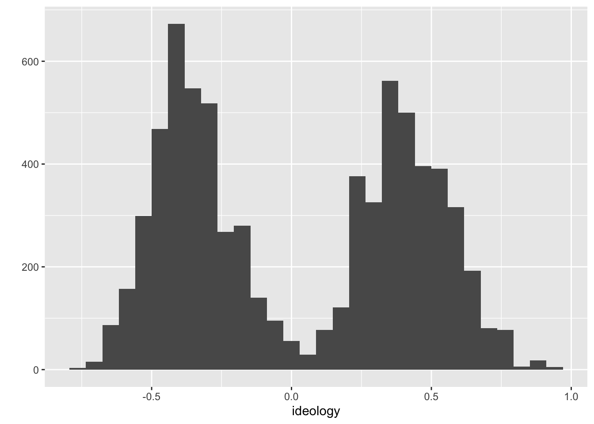

Chapter 3 Loading Data into R
Rather than manually entering data using c() or something else, we’ll want to load data in stored in a data file.
3.1 The Terms
There are three important ingredients in loading a data set into R.
- The file type, usually indicated by the extension (
.rds,.csv,.dta,.xlsx). - The current working directory.
- The file path (relative to the working directory).
3.1.1 File Types
In political science, our data sets are usually one of four types:
- R data or
.rdsfiles. This is the easiest format because it stores factors as factors and all the related information. Read withreadr::read_rds(). Note that readr is part of the tidyverse, solibrary(tidyverse)loads readr. (I explain a “data frame” below, but realize that an.rdsfile can contain any R object, not just a data frame.) - comma-separated value or
.csvfiles. This is a common, sharable, robust data file type. You can open these files with any statistical software. GitHub renders these nicely. However, the csv format does not distinguish between factors as character strings, and treats variables as numbers or characters. Read withreadr::read_csv(). - Stata or
.dtafiles. Another common data format because many political scientists use Stata. Read these files into R withhaven::read_dta(). - Excel or
.xlsxfiles. Another common data format because data are easy to enter into spreadsheets like Excel. Read these files into R withreadxl::read_excel().
3.1.2 Comma-Separated Value Format (.csv)
Data can be stored in a wide range of formats. One popular format, for example, is Stata’s proprietary .dta format. I typically use (and encourage you to use) the comma-separated values .csv format. The .csv format is excellent because it is open and simple. This means that anyone can use it without acess to proprietary software. It will also be useble by anyone into the foreseeable future. We can see why .csv files are easy to work with if we open it up the file nominate.csv with a text editor. You’ll see that you–with your eyes–can read the file directly. You don’t really need software at all!

.csv in a Text Editor
I tried the same thing for a similar .dta file. With your eyes, it looks like nonsense. You’ll definitely need Stata (or other speciallized software) to work with this file.

.dta in a Text Editor
Also, .csv files are easy to support, so they work in almost all data analysis software. For example, we can open up nominate.csv in Excel. You can see that we have six variables in the columns and many cases in the rows (we don’t know how many because they overflow the screen). In this case, each row represents a particular Congressperson from a particular Congress (with Presidents as well. The second row, for example, is for Rep. Callahan (R) from the 1st Congressional District of Alabama. During the 100th Congress, Rep. Calahan has a ideology score of 0.358, which means he’s conservative, but not as conservative as Pres. Reagan, who has a score of 0.747. We’ll work with these data a lot thoughout the semester, so we’ll have plenty of time for closer examination.

.csv in Excel
3.1.3 The Working Directory
Any time you work in R (or RStudio), you are working from a “working directory.” That is, whenever R needs to locate a file to load it or save it, it looks in the working directory.
For example, I’m writing a paper now. I named the project directory wilks/ (which I placed in a folder called projects/ in my Dropbox folder.) If I open this project by double-clicking wilks.Rproj in the wilks/ project directory, I have opened that project in RStudio.
If I run getwd() (“get the working directory”), R prints the following:
> getwd()
[1] "/Users/carlislerainey/Dropbox/projects/wilks"Notice that the working directory is the project directory. This happens because with use .Rproj files to manage the way that RStudio interacts with our projects.
If I did not have a project open in RStudio, then I get the following:
> getwd()
[1] "/Users/carlislerainey"Of course, any files we want to access or save are in the project directory, which is three levels deeper in the file system than carlislerainey/.
If I didn’t use an .Rproj file to manage the project, then I could set the working directory whereever I wanted with setwd(). See below:
> setwd("/Users/carlislerainey/Dropbox/projects/wilks")
> getwd()
[1] "/Users/carlislerainey/Dropbox/projects/wilks"But we use an .Rproj file to manage our projects, so our working directory is always the project directory. I’ll say it louder for the people in the back.
We use an
.Rprojfile to manage our projects, so our working directory is always the project directory.
We don’t (or rarely) need to change or choose the working directory, just realize that it’s the project directory.
3.1.4 The Path
Suppose we want to read the Stata data set ddrevisited_data_v1.dta.
We know the following:
- The filetype is dta. We’ll use
haven::read_dta(). - The working directory is the project directory, as always.
Now we just need the file path; that’s the only argument that haven::read_dta() requires.
3.1.4.1 Organizing Your Project Directories
Any data set that you want to read into R should be in the project folder. You could put it in the main project directory, but you probably want to put it in a sub-directory (or perhaps even deeper).
The diagram below outlines how I organized the files in cool-project/. I have an R/ subdirectory for R scripts. I have a data/ subdirectory for data sets. I put the raw data sets in data/raw/ (i.e., a subsubdirectory) to help protect them. I put the manuscript in doc/ and the subsubdirectories doc/fig/ for figures and doc/tab/ for tables. I have the output subdirectory for intermediate files I create along the way.
cool-project/
├── R/
│ ├── clean-data.R
│ ├── fit-models.R
│ ├── make-table.R
│ └── plot-data.R
├── data/
│ ├── raw/
│ │ ├── ddrevisited_data_v1.dta
│ │ └── p4v2018.xls
│ ├── clean-data.csv
│ └── clean-data.rds
├── doc/
│ ├── fig/
│ │ └── plot1.png
│ ├── tab/
│ │ └── table.tex
│ ├── cool-project.pdf
│ └── cool-project.tex
├── output/
│ ├── model-fit.csv
│ ├── model-fit.rds
│ ├── model-pred.csv
│ └── model-pred.rds
├── README.md
└── cool-project.RprojBelow is a screenshot from Finder on macOS that shows the same organization.

3.1.4.2 An Aside on Formats
If you’re reading carefully, you’ll notice that I keep both csv and rds versions of the data sets I create. I do this for the following reasons:
- rds data sets are the most convenient to compute with because preserve factors. I want this.
- csv data sets are the easiest to share and inspect, both locally (Finder even shows me the file!) and on GitHub (which renders a nice table). I want this.
- It’s easy to create both and keep them in sync.
To create both, I just run write_rds() and write_csv() on consecutive lines.
3.1.5 Determining the Path
Because we know the working directory is the project directory, we only need to provide the reading function the path relative to thet project directory.
The path is just directions from the working/project directory to the file you want to read.
For example, if we wanted to find ddrevisited_data_v1.dta, we would do the follwing (from the working/project directory):
- Go into
data/. - Go into
raw/. - Find
ddrevisited_data_v1.dta.
That’s it. To create the path, we just put these pieces together: data/raw/ddrevisited_data_v1.dta.
Now we just give the path to haven::read_dta(). We get: read_dta("data/raw/ddrevisited_data_v1.dta"). We need to assign the data set to an object, we want something the following:
# load packages
library(haven)
# load raw data set
raw_df <- read_dta("data/raw/ddrevisited_data_v1.dta")This loads the data set into R.
Review Exercises
There are 8 total data sets in cool-project/ (all the files in data/ and output/). Answer the following questions for each data set:
- What function should you use to read that file?
- What’s the working directory?
- What’s the path (relative to the working directory)?
- Given the above, what’s the code to read the data (and store it as an object)?
When you think you know, check your work by trying your commands. I put cool-project on Github. Clone it (or click Code > Download ZIP to download the directory) and see if you can load the data sets.
Solution for ddrevisited_data_v1.dta
- The extension is
.dta, so I know this is a Stata data set and that I need to usehaven::read_dta(). - The working directory is
cool-project/because the working directory is always the project directory since I use an.Rprojfile to manage my projects. - The path is
data/raw/ddrevisited_data_v1.dta. I can see this in the directory tree above, or by inspecting the directory on my computer. - Below:
# load packages
library(haven)
# load raw data sets
raw_df <- read_dta("data/raw/ddrevisited_data_v1.dta")3.1.6 rio
Loading data into R is a little bit tricky and tedious. One reason is finding a function to handle the data format. If the data is .Rds, .csv, or .dta. formats, we already know what to do. But what if the data is in a format such as .tsv (tab separated), .xlsx (Microsoft Excel), .ods (OpenDocument spreadsheet), or any number of other formats?
The R package rio contains the fuction import() that automatically adapts to the different formats according to the filename extension. It’s just one function—you simply need to point it to the data set.
3.2 Data Frames
Almost the statistical computation we do in this class revolves around data sets. In R, it usually makes sense to store data sets as specific objects known as data frames. Data frames are simply a set of vectors that all contain the same number of elements. These might be numeric, character, factor, or logical vectors, or some mixture of types.
When you read a data set into R using readr::read_csv, readr::read_rds(), haven::read_dta(), or some other method, it creates a data frame. A data frame is a special R object that holds a set of vectors that all have the name number of elements. If you think of the data set as an Excel spreadsheet, then you can think of the columns of the spreadsheet as the vectors held by the data frame. These vectors or variables can be numeric, character, factor, or logical. As a reminder, here are the variable types:
numeric: numbers, such as 1.1, 2.4, and 3.4. Sometimes numeric variables are subdivided intointeger(whole numbers, e.g., 1, 2, 3, etc.) anddouble(fractions, e.g., 1.47, 3.35462, etc.).character: text strings, such as"Republican"or"Argentina (2001)".factor: cateogories, such as"Very Liberal","Weak Republican", or"Female". Similar tocharacter, except the entire set of possible levels is defined. Afactorvariable may be ordered or unordered.logical: true or false, such asTRUEorFALSE.
For the .csv files we will usually use, R cannot distinguish between character and factor variables. By default, readr::read_csv() will load these as character variables–there’s no way for R to know the entire set of levels from the .csv file anyway. Sometimes, though, it will be useful to work with factor variables. This is straightforward to change.
3.2.1 Working with Variables in Data Frames
A data frame holds the variables, but it also hides the vectors. For example, the data frame nominate, which we loaded above, has a numeric variable ideology, but if we try to sum it, we get an error.
## Error in eval(expr, envir, enclos): object 'ideology' not foundWe’ve loaded the data set, but R can’t seem to find the variable. That’s because the variable ideology is hidden in the data frame nominate.
In order to access variables in data frames, we need to do one of two things.
- Use the
$operator. - Use the
dataargument.
Some functions, such as exp() are designed to work with vectors, not data frames. This will be the case for most functions we use (with the notable exceptions of plotting in with ggplot() and estimating liner model with lm()). To use the functions on variables stored in data frames, we need to use the $ operator.
Suppose we have a data set loaded and given to the object my_data. If my_data contains the variable of interest my_variable, then we can access my_variable using the syntax my_data$my_varible. That is, the syntax data$var means “get the variable var from the data set data.” We’ll use this often, so make sure it’s clear.
## [1] NA## [1] 164.457But some functions are designed to work with data frames. For example, the qplot() function in the ggplot2 package is designed to work with data sets. If you open the help file for qplot() (i.e., help(qplot) after library(ggplot2)), you’ll see that one of the arguments is data. If you use this argument to point qplot() to the data frame, it will know where to find your variables.
# load ggplot2 package, which contains the qplot function
library(ggplot2)
# example of a function with a data argument
qplot(ideology, data = nominate) # using the data argument## `stat_bin()` using `bins = 30`. Pick better value with `binwidth`.## Warning: Removed 1 rows containing non-finite values (stat_bin).
Many of the functions we use take a data argument. If they do not, though, we’ll need to use the $ operator. Because we’ll almost always use data stored in data frames, you need to be sure to use one approach or the other. If the function has a data argument, use it. In other cases, use the $ operator.
3.3 How We’ll Always Use R
- Open RStudio by clicking the
.Rprojfile for the project. (If you haven’t created the.Rprojfile yet, then open RStudio and click File > New Project…). - Open a new R script to do something new OR open a previously saved script to continue making progress.
Review Exercises
- Download the nominate data sets from the course website and put them in the
data/subdirectory. - Start a new R script that loads the tidyverse package.
- In the same script, load the each version of the nominate data set using the appropriate function (note that tidyverse automatically loads readr but not haven). Assign each data set to a different object name.
- Use the
glimpse()(part of tidyverse) function to get a quick look at each data set. - Repeat using
import()(load the rio package first!). - Try to use five different functions (
mean(),sum(), etc.) on the data frames or variables in the data frames. Using#comments, explain what each function is doing.